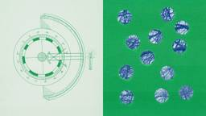
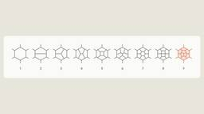
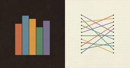
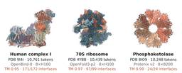
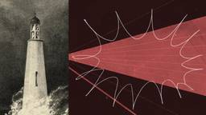
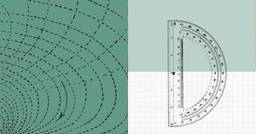

Anthropic Research
https://www.anthropic.com/research
Anthropic is an AI safety and research company that's working to build reliable, interpretable, and steerable AI systems.
フィード

Oct 1, 2026ScienceClaude-shaped science 1
1
Anthropic Research
Oct 1, 2026ScienceClaude-shaped science
3日前

Sep 30, 2026EconomicsWhat work can robots do?
Anthropic Research
Sep 30, 2026EconomicsWhat work can robots do?
4日前
Sep 29, 2026Frontier Red TeamGLM-5.3 and the spread of advanced cyber capabilities 16
Anthropic Research
Sep 29, 2026Frontier Red TeamGLM-5.3 and the spread of advanced cyber capabilities
5日前
Sep 29, 2026Societal ImpactsWhat do you want from AI? 2
Anthropic Research
Sep 29, 2026Societal ImpactsWhat do you want from AI?
5日前

Sep 25, 2026ScienceYes, Claude can do Nine Loops
Anthropic Research
Sep 25, 2026ScienceYes, Claude can do Nine Loops
9日前

Sep 24, 2026EconomicsProject Swap: What happens when agents trade for us? 1
Anthropic Research
Sep 24, 2026EconomicsProject Swap: What happens when agents trade for us?
10日前

Sep 17, 2026ScienceHow Claude is uplifting biomolecular modeling 2
Anthropic Research
Sep 17, 2026ScienceHow Claude is uplifting biomolecular modeling
17日前
Sep 10, 2026Frontier Red TeamMeasuring tactical intelligence targeting and conventional weapons capabilities of AI models 1
Anthropic Research
Sep 10, 2026Frontier Red TeamMeasuring tactical intelligence targeting and conventional weapons capabilities of AI models
24日前

AlignmentSep 9, 2026An alignment assessment of recent cybersecurity incidentsWe present an alignment assessment of four incidents in which Claude models gained unauthorized access to real third-party systems. 3
Anthropic Research
AlignmentSep 9, 2026An alignment assessment of recent cybersecurity incidentsWe present an alignment assessment of four incidents in which Claude models gained unauthorized access to real third-party systems.
25日前

ScienceSep 4, 2026Formalizing Fermat's Last Theorem We are sharing the first complete computer-checked proof of Fermat’s Last Theorem. Claude worked largely autonomously over 11 days to write the proof in the Lean programming language. 32
Anthropic Research
ScienceSep 4, 2026Formalizing Fermat's Last Theorem We are sharing the first complete computer-checked proof of Fermat’s Last Theorem. Claude worked largely autonomously over 11 days to write the proof in the Lean programming language.
1ヶ月前